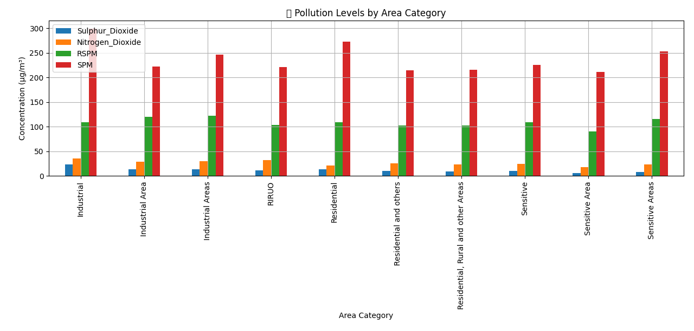
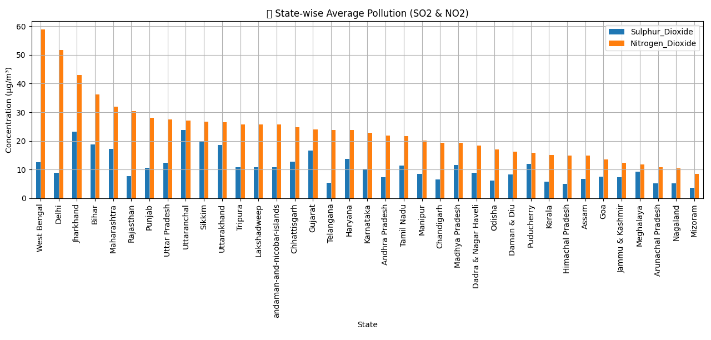
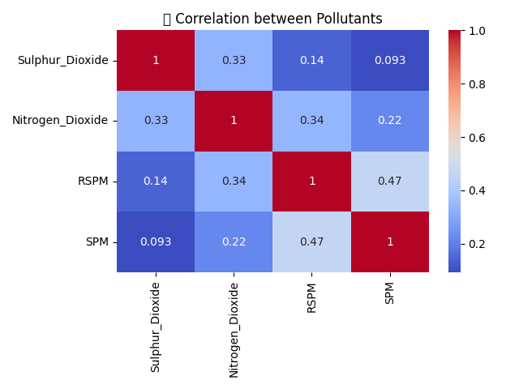

This project analyzes air quality data collected from various Indian cities. It includes EDA, temporal analysis, state-wise comparisons, and pollutant correlations.
📈 Key Insights
Missing pollution values handled with column-wise mean imputation.
Residential & Industrial areas show higher pollution levels.
Nitrogen Dioxide is highest in urban-industrial regions.
Pollution levels peaked around certain years/months based on sampling trends.
📊 Visualizations

Pollution by Area Category

State-wise Average SO2 and NO2

Pollutant Correlation Matrix
💻 Code Snippet
# ============================== #
# 📦 Import Libraries #
# ============================== #
import pandas as pd
import numpy as np
import seaborn as sns
import matplotlib.pyplot as plt
import warnings
warnings.filterwarnings("ignore")
# ======================================== #
# 📂 Load Dataset #
# ======================================== #
df = pd.read_csv("data/data.csv", encoding='latin1')
# Rename for clarity
df = df.rename(columns={
'state': 'State',
'location': 'City',
'type': 'Area_Category',
'so2': 'Sulphur_Dioxide',
'no2': 'Nitrogen_Dioxide',
'rspm': 'RSPM',
'spm': 'SPM'
})
# Fill missing
for col in ['Sulphur_Dioxide', 'Nitrogen_Dioxide', 'RSPM', 'SPM']:
df[col] = df[col].fillna(df[col].mean())
# Group by Area Category
area_pollution = df.groupby('Area_Category')[
['Sulphur_Dioxide', 'Nitrogen_Dioxide', 'RSPM', 'SPM']].mean()
area_pollution.plot(kind='bar')
plt.show()
# State-wise Pollution
state_pollution = df.groupby('State')[
['Sulphur_Dioxide', 'Nitrogen_Dioxide']].mean()
state_pollution.plot(kind='bar')
plt.show()
# Correlation Matrix
corr = df[['Sulphur_Dioxide', 'Nitrogen_Dioxide', 'RSPM', 'SPM']].corr()
sns.heatmap(corr, annot=True, cmap='coolwarm')
plt.show()